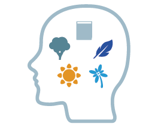
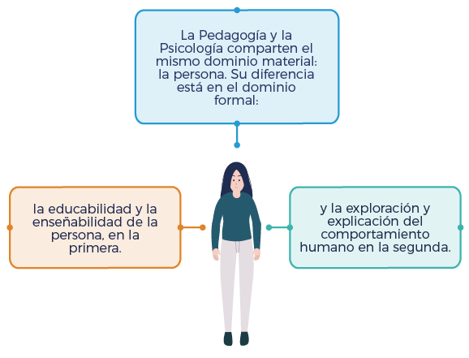
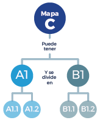

Lea el siguiente caso
Camilo es profesor ocasional de la Facultad de Educación en todas las licenciaturas, es psicólogo y enseña Psicología del Aprendizaje. Otro profesor, acompaña el curso de Epistemología de todas las licenciaturas de la Facultad y le asignó a sus estudiantes un trabajo que consiste en identificar:
- Si la educación es una ciencia, una disciplina o una profesión.
- Si el conocimiento de la educación corresponde al campo de las ciencias naturales, las humanidades o las ciencias sociales.
Como la educación supone interdisciplinaridad, les preguntó también:
- ¿La psicología es ciencia, disciplina o profesión?
- ¿El conocimiento de la psicología corresponde al campo de las ciencias naturales, a las humanidades o las ciencias sociales?
Los estudiantes le están pidiendo a Camilo, el profesor ocasional, que los ayude a encontrar estas respuestas. ¿Que debería responder Camilo a sus estudiantes?
Para saber cómo puede responder Camilo lo invitamos a estudiar el siguiente contenido.

La Epistemología es una reflexión sobre la ciencia. En ocasiones, opera como la justificación filosófica de la ciencia; en otras, como la lógica del saber científico y, en otras, como la averiguación de los métodos y objetos de cada una de las ciencias y de la ciencia en general. La dificultad de asignarle sentido unívoco nos está mostrando, de entrada, la complejidad de hacer formulaciones precisas y universales en torno a la ciencia. Lo que aquí se expresa es, por tanto, el resultado de instalarse en una particular mirada; se sabe, entonces, que está siempre sometida a la crítica y cuestionamientos provenientes de ópticas distintas.
La universidad, como cualquier institución educativa, tiene en el conocimiento su columna vertebral. Si bien ella busca ir más allá de la instrucción cognitiva, parte de él como su pretexto básico. En efecto, el horizonte de sentido último no está en la adquisición, construcción o acumulación de conocimientos; sin embargo, a partir de ellos se conquistan ideales más amplios.
Ahora bien, los conocimientos de la universidad, en su gran mayoría, son de carácter científico. Es importante hacer esta precisión porque la academia no está referida necesariamente a la ciencia; la academia siempre está referida a la disciplina. En las artes, por ejemplo, la ciencia no es propiamente el tipo de conocimiento que se busca. No en todas las facultades de una universidad se hace ciencia; en todas ellas se hace academia. Esto ya aparece muy claro en la Ley 30 del 28 de diciembre de 1993, que en su Artículo 7º determina los campos de acción de la Educación Superior y estipula la Técnica, la Ciencia, la Tecnología, las Humanidades, el Arte y la Filosofía.
Fue la Universidad Napoleónica y el vertiginoso avance de lo científico lo que propició que la ciencia se instalara en las instituciones de educación superior y, prontamente, se extendió el imaginario de que sólo allí se generaba el conocimiento de tal corte. Imaginario que aún opera en muchas comunidades y que desconoce que actualmente también se hace ciencia por fuera de ella.
- Disciplina
-
El concepto de tiene origen en el Latín, proviene de la expresión “discere” que significa aprender. También se usa el término para designar el conjunto de leyes o reglas que rigen una organización y su sumisión a estas; e incluso, en prácticas espirituales-religiosas, sirve para nombrar el azote que se utiliza para autoflagelarse.
Siguiendo la primera definición, podemos afirmar que la disciplina es una forma de pensar sistemáticamente la realidad desde un recorte o fragmentación que se hace de esa realidad (Ander Egg, 1994). Varios conceptos se conjugan en esta definición y su elucidación nos permitirá aproximarnos a su comprensión.
Debemos partir, en primer lugar, de determinar qué significa pensar, pues es el término que define la acción misma de la disciplina. Pensar es hacer una representación mental de algo. Es un acto psíquico peculiar que transcurre en un tiempo y que lleva inherentes un conjunto de imágenes, intuiciones y expresiones. El pensar nos conduce a la conformación de una idea de algo; a determinar qué es lo que caracteriza ese algo y cómo se puede obrar con él. Esto significa que el pensar lleva al saber. No existirá, por tanto, ningún conocimiento que no pase por el tamiz del pensamiento. Si se quiere decir de otra forma, la condición para la construcción del conocimiento, de cualquier clase de conocimiento, es pensar.


Ahora bien, hay diferentes formas de pensar. Podemos hacerlo, por ejemplo, de manera mítica: allí ponemos toda la fuerza de las respuestas en el campo de la divinidad. Así, cualquier idea que se tenga sobre algo partirá en primer lugar de determinar la voluntad de los dioses, del poder que tienen para conjurar la naturaleza y de la posibilidad que poseen de crear. También es posible pensar mágicamente: se busca la explicación de las cosas apelando a elementos que van en contra de las leyes de la naturaleza. También existe el pensamiento lógico que pone su fuerza en la razón argumentada y respeta unas leyes predeterminadas. Igualmente podríamos hablar del pensamiento cotidiano, o del pensamiento musical, o de otras maneras derivadas de las múltiples formas de inteligencia existentes. Cada forma de pensar es una manera de acercarse a la realidad. Cada forma de pensar es una manera de entender y vivir en el mundo.
La disciplina, entonces, es una manera de pensar que se caracteriza por recurrir a las exigencias de un método que busca las explicaciones en la interacción de los objetos propios de su dominio. Esto es, en los lineamientos que conforman lo que denominamos un estatuto epistemológico. Para decirlo de otra forma, pensar disciplinariamente es pensar con rigor.
La disciplina piensa sistemáticamente una zona de la realidad. Realidad es todo el entorno que, de una u otra manera, se relaciona con la existencia de las personas; es una construcción social. Cada cultura determina cómo se insertan los objetos en su mundo. Los objetos no se dan independientemente de su contexto cultural. Si el objeto es algo que tiene sentido, ese sentido es común para la colectividad. De lo contrario, algo que no tenga sentido, no es referente de la realidad; ella viene dada por las convenciones organizadas e instituidas por la sociedad. Ahora bien, la realidad son las notas de un ser que no es mera ilusión o apariencia y se puede aprehender mediante el uso de los sentidos y/o del intelecto. Por eso decimos que existen realidades sensibles y realidades inteligibles.
Para ejercer su acción de pensar la realidad, la disciplina hace un recorte de ella. La fracciona con el fin de ganar una mirada profunda sobre tal zona. Por eso existen diversas disciplinas; todas ellas versan sobre la realidad, pero cada una observa solamente una región específica.
Así, de acuerdo con Ander Egg (1994), cada disciplina se caracteriza porque:
Posee un determinado dominio material, es decir, a cada una corresponden unos objetos particulares de la realidad. El dominio material denota el objeto íntegro y concreto a que se refiere una disciplina determinada (objeto material no necesariamente en el sentido físico, sino como campo o tema, ya que pueden haber objetos imaginarios como los números y las formas geométricas). Por ejemplo, los animales son el objeto material de la Zoología; las plantas son el objeto material de la Botánica; los números de la Aritmética, etc.
Posee un determinado dominio formal. Esto se refiere a un ángulo desde el cual la disciplina considera su dominio material. Decimos que el objeto formal es la perspectiva desde la cual se considera el todo. Así tenemos, por ejemplo, que la Física tiene como objeto formal el estudio de las propiedades de los cuerpos y su modificabilidad; la Química, por su parte, tiene como objeto formal la naturaleza de los cuerpos, la acción molecular de los mismos y las resultantes de sus posibles combinaciones, etc. El dominio material puede ser común a varias de ellas. La Pedagogía y la Psicología comparten el mismo dominio material: la persona. Su diferencia está en el dominio formal: la educabilidad y la enseñabilidad de la persona, en la primera y la exploración y explicación del comportamiento humano en la segunda. Las disciplinas pueden diferenciarse tanto por su dominio material como por su dominio formal.

Posee una integración teórica que viene dada por una serie de conceptos fundamentales y unificadores. La integración teórica es el universo desde el cual se aborda el objeto; son los supuestos que están en la base del conocimiento y que se expresan en un lenguaje especial. Cada disciplina tiene una gramática y un marco conceptual específico. En ella, los términos adquieren un significado peculiar y preciso. Los términos, despojados de toda ambigüedad, son el recurso imprescindible para la claridad metodológica. Por tal razón, siempre que abordamos una, necesariamente debemos clarificar qué significado le asigna a los términos que utiliza. Por ejemplo: el concepto de ‘masa’ designará cuestiones diferentes en Física, Química o Sociología; el concepto de ‘último’ será diferente en Matemáticas y Filosofía.

Posee una serie de métodos y procedimientos particulares que le permiten abordar el objeto de la realidad que le compete. Es evidente que los métodos de las disciplinas que estudian los fenómenos sociales son bien distintos a los de aquellas que estudian los fenómenos naturales. Trasladar el método propio de una disciplina a otra diferente, puede conducir a un conocimiento equívoco. El método se refiere a los pasos que se van dando en la construcción del conocimiento y que han sido planeados; no son pasos que se improvisan; siempre van a estar determinados por el objeto propio de estudio. Aquí vamos a encontrar el quid de la distinción entre la Disciplina y la Ciencia: lo que va a caracterizar a esta última de otras maneras de conocer, será justamente su metodología. Podemos decir que toda Ciencia es una Disciplina caracterizada por un método específico. No todas las disciplinas son científicas; y esto no demerita el valor de su saber.
Por último, cada disciplina origina una o varias profesiones. El saber disciplinar contribuye a intervenir el mundo de una manera especial; así las profesiones son la forma como ella se expresa en el hacer cotidiano. La disciplina que tiene en su objeto formal la Salud Humana, por ejemplo, se expresa en profesiones como la Medicina, la Enfermería, la Nutrición, la Odontología.
- Ciencia
-
Hemos afirmado que toda ciencia es disciplina, pero que no toda disciplina es ciencia. Esto significa que las características del conocimiento científico coinciden en sus lineamientos más amplios con las de la disciplina, y solo se distinguen en algunas precisiones que recortan el ámbito de lo puramente científico.
En términos generales podemos afirmar que la ciencia es un sistema de conceptos y proposiciones que se usa para representar, considerar y predecir hechos observables. Es una teoría explicativa y formalizada. Pero es solamente provisional. Se vincula con los hechos mediante métodos previamente acordados a través de los cuales se evalúan sus conceptos y se confirman sus proposiciones.
Entendemos la definición anterior de la siguiente manera:
Sistema de conceptos: nos remite a la idea de una estructura compleja, conformada por una serie de definiciones precisas que se van articulando de tal manera que configuran una red en la cual un elemento nos remite a otros y no puede entenderse más que en esa relación. Por eso cada disciplina científica construye un lenguaje que se caracteriza por ser Universal y Restringido al mismo tiempo: universal en tanto que su sistema conceptual supera los límites espacio - temporales y es compartido por la comunidad científica. Restringido en tanto que solamente es del dominio de quienes manejan ese saber.
Sistema de proposiciones: el lenguaje de la ciencia, como el de cualquier disciplina, es proposicional; afirma algo acerca del ser de algo. Lo que la caracteriza es que sus proposiciones no se refieren al deber ser, a los deseos, a las intenciones o a juicios de valor; la ciencia busca siempre trascender la especulación (entendida como vaguedad o imprecisión) para emitir juicios categóricos con respecto al ser de un objeto particular.

Representa, considera y predice hechos observables: significa que explica los hechos a partir del análisis de los mismos y que está en la capacidad de anticiparse a eventos similares cuando las circunstancias son igualmente coincidentes. A diferencia de otras disciplinas, la ciencia sólo se involucra con lo que es observable empíricamente; este es uno de los aspectos más sobresalientes del conocimiento científico en tanto que posibilita lo que el Espíritu Ilustrado llamaba la ‘emancipación’, es decir que las personas pudiesen ‘liberarse’ de los movimientos arbitrarios del cosmos estableciendo unos parámetros de comportamiento del mismo.
Es teoría explicativa y formalizada: da razón de las causas de los hechos y los reviste de la formalidad de las leyes. La ciencia tiene en su pretensión última la construcción de un corpus de leyes donde se precise de la manera más rigurosa la relación causa - efecto de los diferentes fenómenos. Esta será la condición necesaria para poder predecir y así emanciparse. Las disciplinas no científicas se distancian aquí ya que, además de lo anterior, admiten la posibilidad de la interpretación y de la prescripción; la ciencia no asume la Hermenéutica como método y tampoco dice qué hacer y cómo hacerlo, solamente describe: afirma cómo es algo.
Es provisional: este es un elemento común a todas las disciplinas. La certeza del conocimiento científico no se debe confundir con la perennidad. La ciencia tiene claro que acepta como válido un determinado conocimiento solamente hasta que aparezca otro que lo refute y/o complemente. Eso garantiza la inacabada investigación, la certeza de que existen otras posibilidades que expliquen con mayor grado de satisfacción lo logrado hasta un momento puntual.

Se vincula a los hechos mediante métodos previamente acordados. En efecto, esta nota caracteriza al conocimiento científico por la manera que tiene de ser construido: se refiere a unos pasos predeterminados, a un proceso cuya secuencia se respeta estrictamente so pena de invalidar los resultados. Aquí encontramos la principal diferencia entre la ciencia y otras disciplinas no científicas: en el método científico el criterio último será la experiencia y una particular circularidad entre los pasos que va dando caracterizada, de manera general, por la observación, el registro, la sistematización de datos, el análisis, la elaboración de conclusiones, la formulación de principios y leyes y la confrontación originada por la comunicación de sus hallazgos.
- Profesión
-
La palabra proviene del Latín “profiteri” que significa declarar y que, a partir del siglo XII se utilizó para designar una actividad u ocupación. El profesional es aquel que profesa una disciplina; que lleva a la práctica toda la mirada de la zona de realidad que estudia su disciplina. No se puede entender la disciplina sin profesión y no se puede entender, tampoco, la profesión sin disciplina.
Podemos afirmar entonces que la disciplina es una mirada más amplia del objeto de estudio mientras que la profesión es el resultado, que viene dado en términos de la práctica, de esa mirada. Es importante agregar aquí que la práctica profesional se da en condiciones socio - culturales concretas; cada profesión se ejerce de diversa manera según la sociedad a la cual sirva.
Por lo anterior, se dice que el profesional es aquel que pertenece a un grupo específico, caracterizado por poseer un conocimiento determinado a partir de conceptos y teorías comunes, que utiliza procedimientos igualmente específicos para influir en la realidad manteniéndola o transformándola. En último término, el profesional, en tanto que investiga y aplica, es la forma como una disciplina se concreta.

El problema que se le critica a la Universidad actualmente está en que se ha centrado exclusivamente en la formación de profesionales; por eso se habla de la ‘universidad profesionalizante’: proporciona un conjunto de conocimientos, pero no las reglas para producirlos; concibe el conocimiento como un instrumento de acción. Esto trae como consecuencia lo que algunos han llamado el profesional de mantenimiento: el individuo que sale al mercado laboral a repetir fórmulas de las cuales no sabe exactamente su origen y sentido.
El profesional de mantenimiento hace, pero no conoce aquello que sustenta su hacer. Por eso no puede construir respuestas alternativas cuando alguna de las variables de la realidad le cambia. Por eso no es constructor de la disciplina, no participa en su desarrollo, solamente consume lo que otros van alcanzando a través de cursos de actualización que toma esporádicamente para no quedarse atrasado. No crea la disciplina, solo utiliza su formulación.
El párrafo anterior nos permite hacer otra distinción fundamental: una cosa es el oficio y otra la profesión. El oficio se refiere, originalmente a la prestación de un servicio (del Latín “officium”) y su uso ha derivado hasta designar una ocupación. En este orden, todo aquel que se ocupe de algo realiza un oficio y no requiere de una preparación académica previa. Quien oficia lo hace sin el rigor de la disciplina, del saber sistemático y metódico. Así, por ejemplo, el que alguien aprenda empíricamente a conducir y se dedique a prestar ese servicio, no lo convierte en un profesional del volante. Con esto podemos afirmar que el llamado profesional de mantenimiento se ubica, prácticamente, en la misma línea del oficial; del que hace sin el saber qué sustenta su acción.
Por el contrario, la universidad disciplinante le permite al estudiante la adquisición de una serie de competencias que, siguiendo las características enunciadas, pasan por la construcción de la realidad y de su objeto particular dentro de ella; por el lenguaje propio de su comunidad disciplinaria; por los métodos y procedimientos aceptados y validados por la misma comunidad y, por último, por las formas concretas de operar esa zona de la realidad. Al brindarle esos elementos, la Universidad garantiza personas con alto poder de intuición que las conduce, inmediatamente, a la creatividad; a la fortaleza para vislumbrar mundos nuevos; a la capacidad de generar respuestas alternativas frente a la complejidad de un mundo que día a día va originando nuevos retos; un mundo lleno de encrucijadas. Es aquí donde se muestra en toda su magnitud la importancia de la investigación como condición primera en la pretensión de construir la disciplina.
Finalmente, podemos afirmar que el profesional tradicional solamente repite fórmulas, mientras que el disciplinado crea preguntas que lo mueven a construir novedosas formas de responderlas; ese profesional hace, mientras que el disciplinado sabe hacer. Lo que se espera es la creación de un nuevo profesional: aquel que posea como fundamento de su acción una sólida formación disciplinaria.
El nuevo profesional está en capacidad de hacer disciplina con conciencia. Una disciplina que en lugar de cerrar horizontes esté abierta a nutrirse de diversos aportes; que maneje sus fundamentos, el sentido último de su ser y que a través de la comprensión que haga de la misma, construya propuestas orientadas hacia la transformación de las condiciones del contexto en donde se desempeña.
La educación es:
- Una ciencia
- Una disciplina
- Una profesión
El conocimiento de la educación corresponde al campo de:
- Ciencias Naturales
- Ciencias Humanas
- Ciencias Sociales
La psicología es:
- Una ciencia
- Una disciplina
- Una profesión
El conocimiento de la sicología corresponde al campo de:
- Ciencias Naturales
- Ciencias Humanas
- Ciencias Sociales
Ya pudo ayudar a Camilo, ahora, piense en su curso y responda:
Lo que enseña es:
- Una disciplina en sí misma
- Parte de una disciplina
Lo que enseña es parte de:
- Una disciplina científica
- Una disciplina no científica
La siguiente tabla contiene la clasificación de las áreas científicas según la OCDE. Busque y seleccione el campo, el área y la disciplina a la que pertenece lo que usted enseña:
| Campo | Área | Disciplina |
|---|